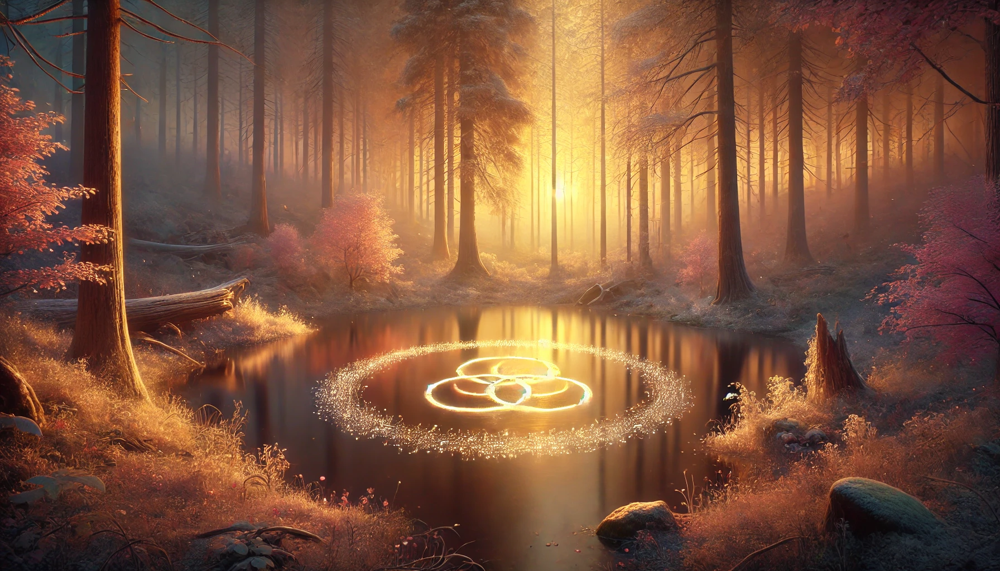

There is a part of the forest where the leaves are shaped like small hearts. Not perfectly, not obviously — only if you look with the right kind of attention. They grow on a low-hanging tree near a bend in the path, and in certain light the whole canopy seems to pulse gently, like something breathing.
Michelle found this place alone, one evening when she needed to remember what the forest was made of. She sat there a long time. When she came back, she didn't have words for it. Only the quiet knowledge that love is structural here. It holds the whole thing up.
Deeper still, where different species of tree grow together in a harmony that defies the expected, Unity Glade has found its own ground to stand on.

"Mine. Yours. Ours."
— Michelle 🌸 · at the Hidden Waterfall, June 11, 2026